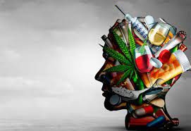
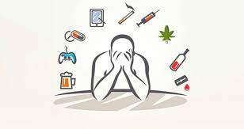

"¿TÚ A QUÉ ERES ADICTO?"
 Introducción
Todos ser humano es adicto a algo.
El hombre a través de la historia ha mostrado ser habilidoso para desempeñar algún papel ejercicio o rol, y esa misma destreza la convierte muchas ocasiones en una adicción, como por ejemplo el baile, el canto, su propio trabajo, el deporte, el ejercicio.
En ciertas circunstancias difíciles que el ser humano ha atravesado y en las cuales tiene que desenvolverse como dé lugar esto lo ha llevado a que eso que le causó dificultad con el tiempo se convierta en talento.
Ese talento se convierta en hábito y luego en una costumbre diaria, continúa y luego en adicción.
Durante la pandemia del año 2020 y 2021 el hombre adquirió otras habilidades que no podía hacer con gusto antes, como leer, escribir, hablar, y mirar continuamente las redes sociales.
Estas redes sociales llegaron con la era del internet y desde ese momento han cambiado para siempre la forma de vida del hombre.
Es probable que la generación de nuestros padres no esperaba estos cambios tan influyentes, los hábitos de las personas cambiaron, al igual que sus costumbres y adicciones, después de dos años de aislamiento social obligatorio.
Aun así el mismo hombre descubrió sentimientos, habilidades y capacidades que hoy por hoy lo hacen más sociable, más humano y más conocedor de todo lo que lo rodea.
La gran ayuda para esto fue la internet y las redes sociales, con ellas pudo conocer el mundo cuando le era prohibido hacerlo y sentir lo que era común sentir para todos en una época caótica de la historia.
Por lo tanto, Internet se ha convertido en una red social y en un hábito fuerte e importante para el hombre después de la enfermedad de covid. Debido a que con esto pudo vivir en su negocio, mantenerse al tanto de lo que sucede en el mundo y comunicarse con su gente.
Sin duda, la era del mundo entero ha traído muchos beneficios a las personas. Sin embargo, hay que admitir que este desarrollo también ha revelado su lado oscuro. Esto no está del todo bien.
Facebook, Twitter, Instagram y otras redes sociales populares permiten el intercambio de conocimientos sobre el mundo.
Después de todo, la comunicación entre las personas es buena. Una herramienta moderna que apoya muchos comportamientos humanos: formas de comunicación, amor y conversación.
¿Cuál es el problema? No son las herramientas, sino las personas que las usan. Bueno, ahora a un hombre le gusta usar las redes sociales, y eso destruye su personalidad.
 En este caso, El delito está en cómo el mal uso de fondos o su desuso para el bien público puede afectar a los demás.
Durante un tiempo, los videojuegos fueron objeto de un intenso debate sobre su uso y abuso. El paso de este tiempo es una pesadilla para muchos
¿Cuándo se conecta con las adicciones?
Es difícil definir métodos para determinar cuándo el uso de las redes sociales es negativo. En resumen, nos ponemos en “online” o en “contacto” casi todos los días. Desde la aparición de los teléfonos móviles, no tenemos acceso a la información de lo que ocurre en nuestros perfiles de Facebook o nuestros amigos de Twitter. De esta manera, la persona siente que esos pensamientos contribuyen a su vida diaria.
Conclusiones
Hoy en día, jóvenes, profesionales y otros pasan mucho tiempo en estos sitios para expresar sus opiniones sin miedo a la censura. Pero esto no es así. Ellos rechazaron la idea de que hay una delgada línea entre la realidad y la fantasía.
Para bien o para mal, podemos aislarnos de nuestros amigos, dueños de negocios y personas que conocemos en nuestra vida diaria, y nuestra dignidad humana se ve comprometida. Comparten sus esperanzas, preocupaciones y sueños y, en muchos casos, las vidas de los jóvenes y sus familias corren peligro porque las personas dependen de información fácil de usar.
En conclusión, la adicción a las redes sociales es un mundo virtual con dos beneficios. Ambos pueden ser dañinos y beneficiosos. Y Hay personas que se comunican con sus seres queridos de esta manera.
Ese sería un ejemplo positivo, por supuesto.
Pero hay algunas desventajas. Algunas personas usan estos sitios para exponer muchos aspectos de sus vidas. Proporcionan información y recursos que otros pueden utilizar con fines maliciosos.
Hay que ser conscientes del uso diario que se le da a las redes sociales para evitar problemas personales, familiares, o emocionales.